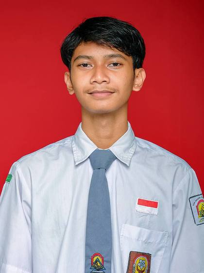
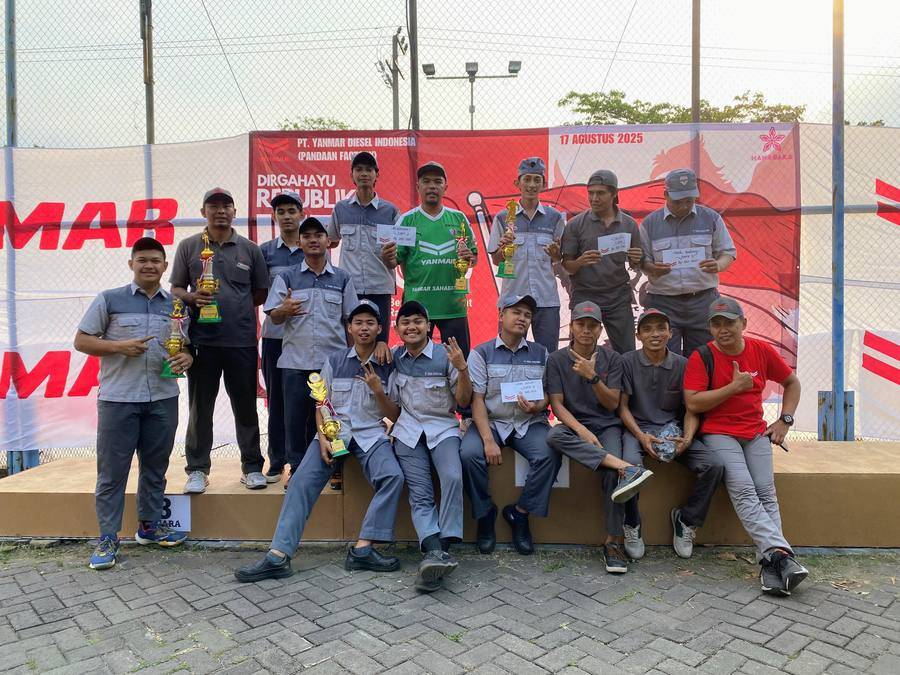
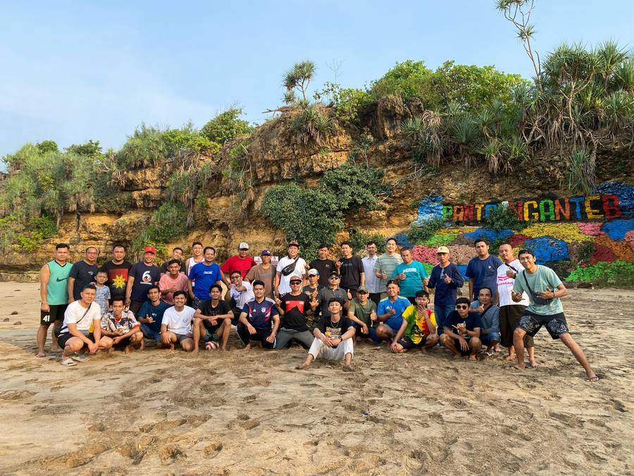
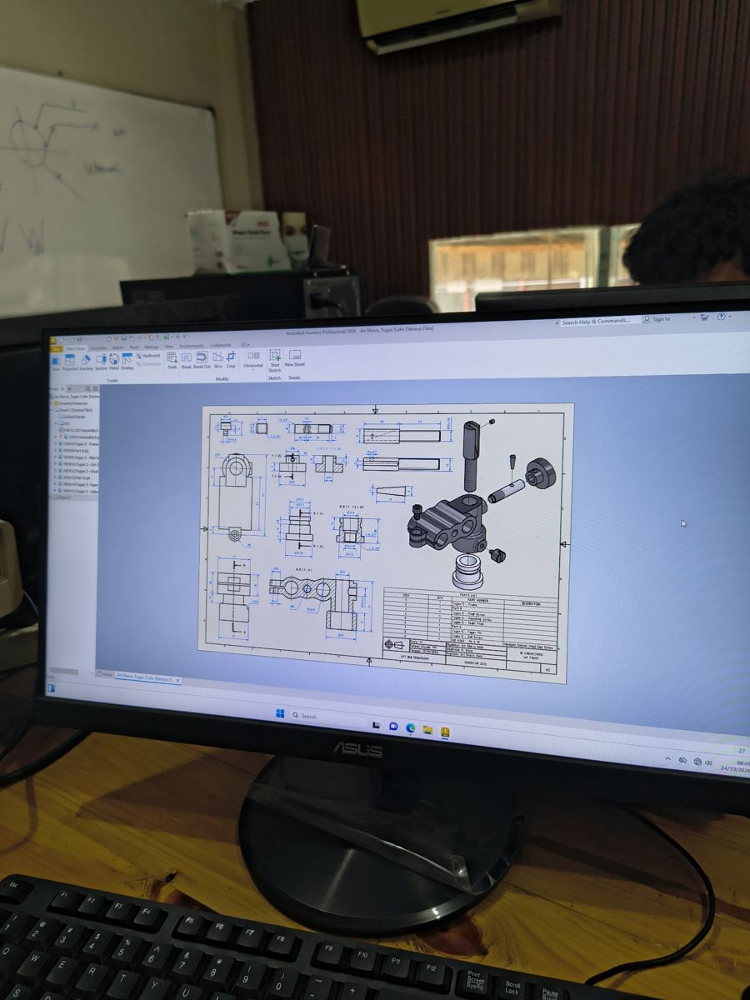
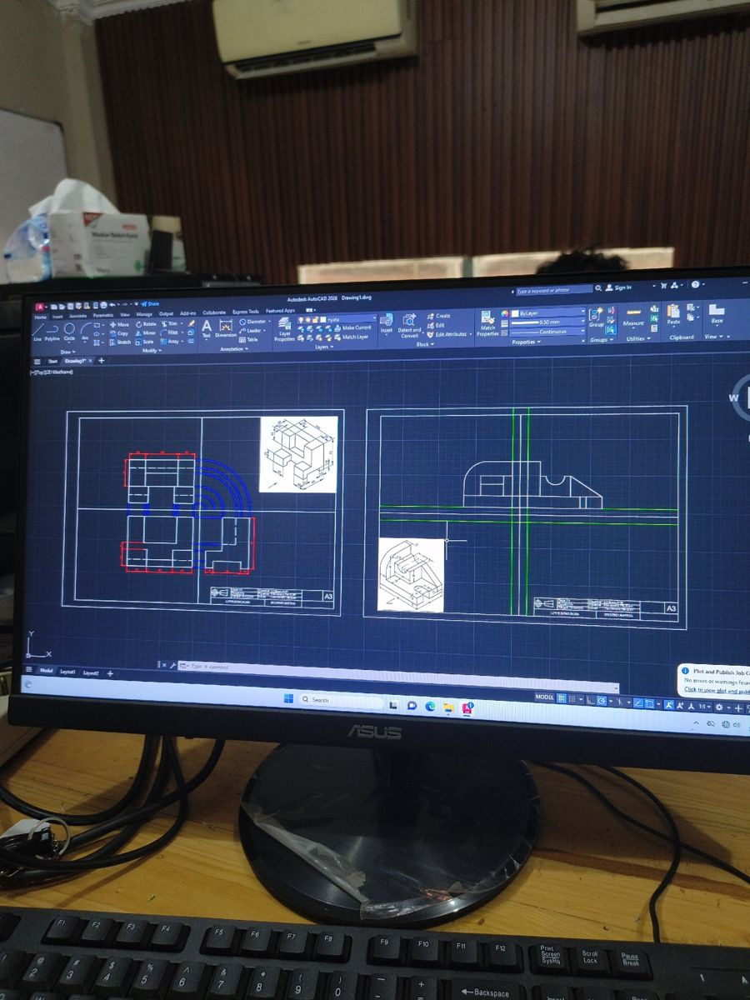
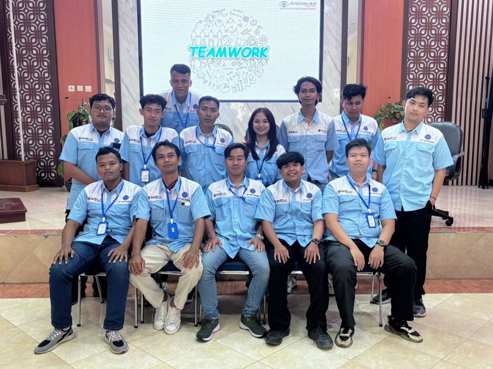
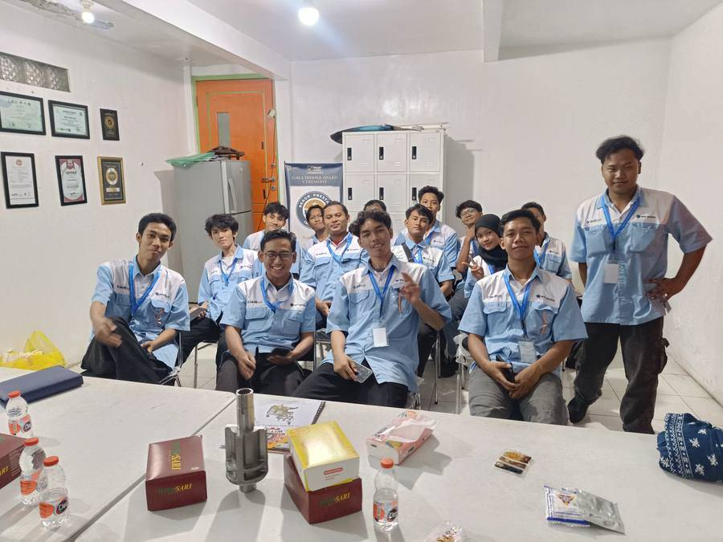
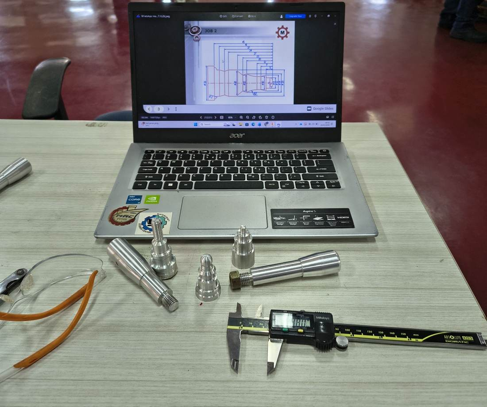
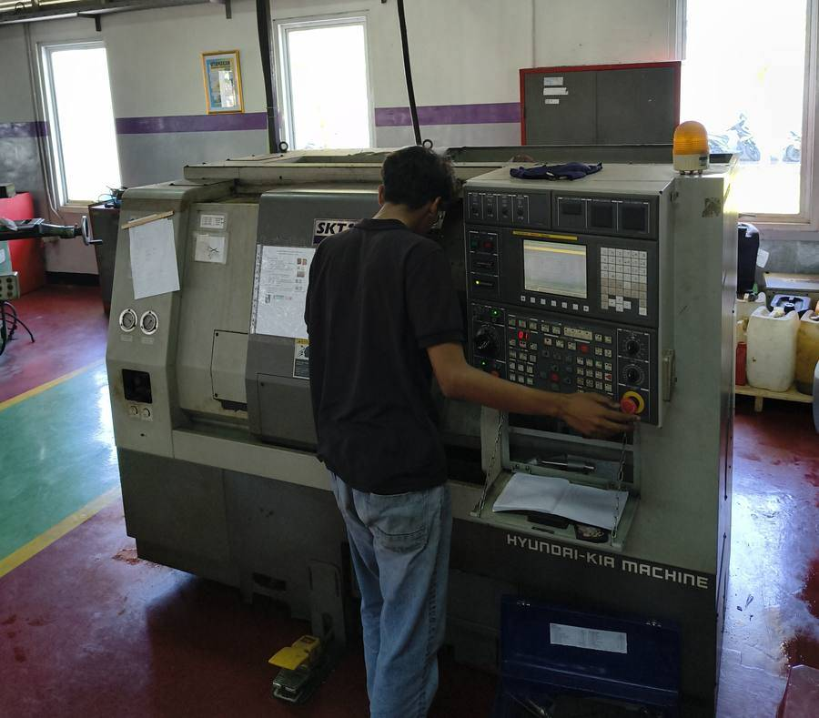

ARI SHEVA AMIN
Industrial Engineering Student | Manufacturing Operations | CNC & CAD
Process Improvement & Production Experience
SOP Compliance • Quality Control • Preventive Maintenance
Saya memiliki pengalaman di lingkungan manufaktur PT Yanmar Diesel Indonesia, mencakup proses Assembly & Packing serta Painting. Pengalaman ini membekali saya dengan pemahaman praktis mengenai alur produksi, pengendalian kualitas, dan standar operasional industri.
Didukung Sertifikat Kompetensi BNSP Pengoperasian Mesin CNC serta pelatihan CNC 360 jam di BPVP Sidoarjo, saya memiliki kompetensi dasar G-Code, Mastercam X5, CNC Milling, CNC Turning, AutoCAD, dan Autodesk Inventor. Saat ini, saya menempuh pendidikan S1 Teknik Industri di Universitas Yudharta Pasuruan melalui kelas karyawan, dengan fokus pengembangan kompetensi pada Manufacturing Engineering, Process Improvement, dan optimasi proses produksi.

Ari Sheva Amin
CNC Machinist & Production Operator
Aktivitas Utama
Dokumentasi kegiatan praktik, operasional permesinan, dan pelatihan teknis profesional.

Merayakan HUT RI
PT. Yanmar Diesel Indonesia

Assembly Division Gathering
PT. Yanmar Diesel Indonesia

Gambar Kerja Part Assembly
UPT BLK Pasuruan

Gambar Teknik 2D
UPT BLK Pasuruan

Foto Bersama Peserta
UPT BLK Pasuruan

Kunjungan Kerja
BPVP Sidoarjo

Inspeksi Benda Kerja
BPVP Sidoarjo

Praktek Langsung di Lapangan
BPVP Sidoarjo
Operator Produksi (Painting)
17 Juni 2026 — 2 Oktober 2026- Melakukan inspeksi visual komponen sebelum proses painting (chipping, karat, deformasi).
- Mengoperasikan spray gun (elektrostatik / manual) untuk aplikasi primer, topcoat, dan clear coat.
- Menyelesaikan proses pengecatan hingga 32+ unit per shift dengan tetap menjaga kualitas finishing dan memenuhi target produksi.
- Penanganan limbah B3 (cat bekas, majun terkontaminasi) sesuai prosedur lingkungan.
Operator Produksi (Assembly Transmission)
5 Januari 2026 — 4 Maret 2026- Merakit 36+ unit komponen transmisi per hari menjadi produk jadi dengan tingkat defect mendekati 0%, sesuai standar kualitas dan efisiensi pabrik.
- Melakukan product testing fungsional pada setiap unit sebelum pengiriman untuk menjamin kelayakan produk.
- Mendeteksi dan mencegah cacat produk melalui inspeksi visual dan pengujian komponen, berkontribusi pada penurunan risiko produk reject.
- Melaksanakan preventive maintenance berkala pada tools dan peralatan kerja untuk menjaga uptime lini produksi.
Operator Produksi Non Cetak (Helper Operator Flexo dan Core)
14 November 2025 — 23 Desember 2025- Mencapai target pengemasan 15.000+ lembar kardus per hari dengan mempertahankan standar kecepatan dan akurasi sesuai SOP.
- Mendukung operasional mesin Flexo dan Core dengan persiapan material tepat waktu, meminimalkan downtime produksi.
- Memantau kondisi mesin dan menjaga kebersihan area kerja secara konsisten sesuai standar lingkungan produksi.
- Melakukan pencatatan produksi harian sebagai bahan evaluasi efisiensi alur kerja dan pencapaian target output.
Operator Produksi (Assembly Packing)
17 Maret 2025 — 17 Oktober 2025- Menyelesaikan finishing dan kontrol kuantitas 53+ unit produk per hari, konsisten memenuhi target lini produksi dengan tingkat akurasi tinggi.
- Menyiapkan dan mengelola material kemasan harian untuk memastikan ketersediaan bahan sesuai kebutuhan produksi tanpa gangguan.
- Mengemas produk sesuai standar perusahaan dan mengelola stok bahan kemasan secara teratur untuk menghindari kekurangan material.
- Menjaga kebersihan dan kerapian area kerja sesuai standar K3 (Keselamatan dan Kesehatan Kerja).
Pramuniaga Toko
November 2024 — Januari 2025- Memberikan pelayanan pelanggan mulai dari menyambut, membantu pemilihan produk, hingga proses transaksi di kasir.
- Menjaga kerapian display produk dan memastikan label harga selalu akurat dan terpasang dengan benar.
- Melakukan stok opname rutin dan berkoordinasi dengan supplier untuk pemesanan ulang saat stok menipis.
- Mempromosikan produk baru dan promo aktif kepada pelanggan untuk mendukung peningkatan penjualan toko.
Pembudidaya Ikan
April 2019 — Januari 2021- Mengelola operasional harian budidaya meliputi seleksi bibit, pemberian pakan terjadwal, dan perawatan kolam secara konsisten.
- Memantau dan menjaga parameter kualitas air (pH, suhu, oksigen terlarut) agar optimal untuk pertumbuhan ikan dan lobster.
- Merancang formulasi pakan yang efektif dan efisien untuk menekan biaya operasional tanpa mengorbankan pertumbuhan ikan.
- Mengelola sistem resirkulasi air modern untuk menjaga kebersihan kolam dan meminimalkan risiko penyakit ikan.
Pelatihan Vokasi
UPT BLK Pasuruan
Penggambaran model 3D dengan CAD
- Mempraktikkan gambar teknik manual dengan proyeksi ortografis (First Angle dan Third Angle).
- Menerapkan dimensioning, jenis garis, skala, dan drawing layout sesuai standar gambar teknik.
- Membuat model 3D menggunakan Autodesk Inventor, termasuk desain komponen dan assembly.
- Membuat gambar teknik 2D menggunakan AutoCAD sesuai prinsip dan standar drafting.
BPVP Sidoarjo
Pengoperasian Mesin CNC (Teknik Manufaktur) • Pelatihan Sertifikasi Resmi
- Menguasai pembacaan Gambar Teknik dan penggunaan alat ukur presisi (jangka sorong, mikrometer, bevel protractor) untuk proses quality check benda kerja.
- Mengoperasikan mesin konvensional (bubut, frais, bor, grinding) sebagai dasar pemahaman permesinan.
- Membuat dan mengedit program CNC menggunakan G-Code serta software Mastercam X5 dan Swansoft CNC Simulator.
- Mengoperasikan Mesin CNC Milling dan CNC Turning/Lathe untuk memproduksi benda kerja sesuai spesifikasi.
Pendidikan Formal
Universitas Yudharta Pasuruan
Bachelor of Engineering, Industrial Engineering
Kelas Karyawan/Ekstensi.
SMAN 1 Pandaan
Ilmu Sosial / IPS • Nilai Rata-rata: 85,91
Credentials
UPT BLK PASURUAN & BNSP
Sertifikat Pelatihan BLK dan Sertifikat Kompetensi BNSP — Penggambaran Model 3D dengan CAD
BPVP Sidoarjo & BNSP
Sertifikat Pelatihan BPVP & Sertifikat Kompetensi BNSP — Pengoperasian Mesin CNC
Surat Keterangan Kerja
PT Yanmar Diesel Indonesia — Operator Produksi (Assembly Packing, Assembly Transmission & Painting)
Kemampuan & Keahlian Resmi
Spesifikasi kompetensi yang siap diimplementasikan langsung di lantai produksi industri.
Hard Skills
Kemampuan teknis dan operasional
- SOP Compliance
- Preventive Maintenance
- Quality Control (QC)
- Produksi & Perakitan (Assembly)
- Microsoft Office
- Mastercam X5
- Swansoft CNC Simulator
- Memahami Gambar Teknik
- Alat Ukur (Jangka Sorong, Micrometer, Bevel Protractor)
- Mesin CNC
- Mesin Konvensional
Soft Skills
Kompetensi interpersonal dan relasional
- Kerjasama Tim
- Komunikasi Efektif
- Manajemen Waktu
- Adaptabilitas
- Kecerdasan Emosional
- Berpikir Kritis
- Public Speaking
- Problem Solving
Let's build something precise.
Dari cetak biru digital hingga eksekusi nyata di lini produksi. Jika Anda mencari kombinasi antara presisi teknik, disiplin tinggi, dan efisiensi manufaktur—saya siap berkontribusi. Let's connect and make it happen.